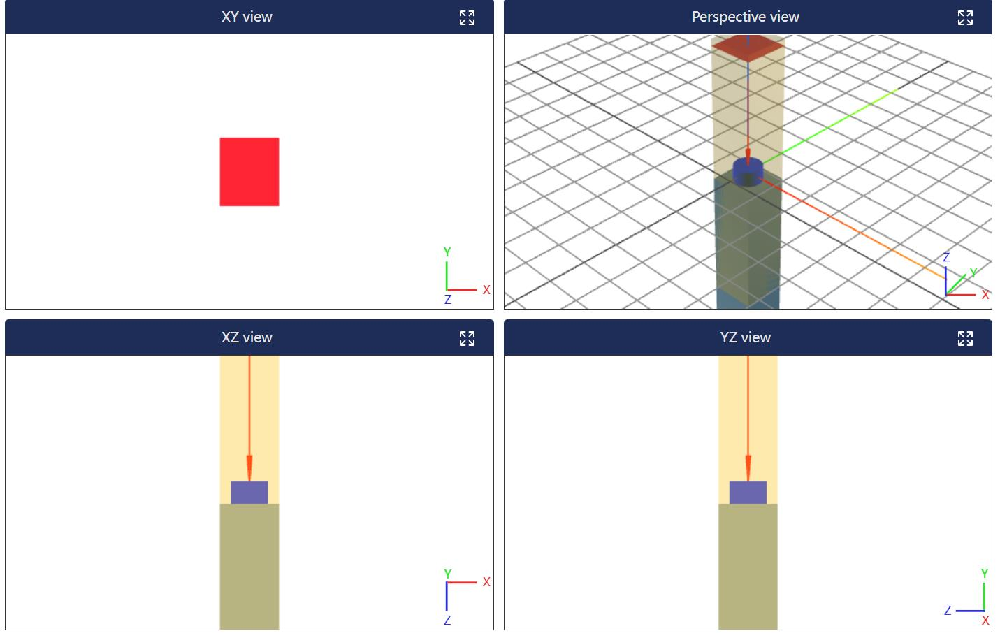

教程/微纳结构
Meta结构建模仿真
微纳光学智能设计软件支持meep/Lumerical/CST环境建模仿真，并统一接口代码让用户使用，本节给出超表面单元结构的建模示例，运行完成后软件会生成光谱图像。

这里给出的是Meta结构建模仿真的统一代码：
1. Lumerical 环境
###lum环境###
sim_start(backend="lum")
import numpy as np
from matplotlib import pyplot as plt
unit=1e-6
dp=0.66*unit
dsub=2.5*unit
c_r=0.206*unit
c_h=0.22*unit
source_z=1.8*unit
sim_z_span=4*unit
T_z=1.9*unit
wl_max=1.6*unit
wl_min=1*unit
nfreq=200
unity_sim.set_sim_paras(wl_max=wl_max,wl_min=wl_min,T_z=1.9*unit,nfreq=nfreq,resolution=50)
###添加结构
unity_sim.define_material('SiO2',1.5) # 定义材料
unity_sim.define_material('Si',3.4) # 定义材料
block=unity_sim.add_block(size=(dp, dp, dsub), center=(0, 0, -c_h/2-dsub/2), material_name='SiO2',color='gray') # 添加方块
cylinder=unity_sim.add_cylinder(radius=c_r, center=(0,0,0), material_name='Si',height= c_h,color='blue') # 添加方块
####添加源，监视器
unity_sim.add_source(size=(dp,dp,0), center=(0,0,source_z))
unity_sim.add_sim_area(size=(dp,dp,sim_z_span), center=(0,0,0))
unity_sim.add_monitor(size=(dp,dp,0), center=(0,0,T_z),name="R")
unity_sim.add_monitor(size=(dp,dp,0), center=(0,0,-T_z),name="T")
unity_sim.add_monitor_field(size=(dp,dp,0), center=(0,0,-T_z))
###运行
unity_sim.run(pt=(0, 0, -T_z))
result = unity_sim.get_result_monitor(name="T")
result1 = unity_sim.get_result_monitor(name="R")
wl = result["wl"]
T = result["power"]
R = result1["power"]
#提取电场
E_total = ["Ex", "Ey", "Ez"]
for i in E_total:
fig, ax = plt.subplots(1, 1)
data = unity_sim.get_result_monitor_field()
E = data[i]
plt.imshow(E[0], origin="lower")
plt.colorbar()
ax.set_title(f"{i}_field")
np.savetxt(f"meta_{i}.txt", E[0])
plt.savefig(f"meta_{i}.png")
device.save_fig(f"meta_{i}", file_path=f"meta_{i}.png",file_data_path=f"meta_{i}.txt")
####提取光谱图
wls = []
Rs = []
Ts = []
for i in range(nfreq):
wls = np.append(wls, wl[i])
Rs = np.append(Rs, R[i])
Ts = np.append(Ts, -T[i])
data = np.zeros((len(wls), 4))
data[:, 0] = wls #
data[:, 1] = Rs #
data[:, 2] = Ts #
data[:, 3] = 1 - Rs - Ts #
np.savetxt("data_meta_model.txt", data) #
plt.figure()
plt.plot(wls, Rs, 'b', label='reflectance')
plt.plot(wls, Ts, 'r', label='transmittance')
plt.plot(wls, 1 - Rs -Ts, 'g', label='loss')
plt.xlabel("wavelength (μm)")
plt.legend(loc="upper right")
plt.savefig("meta_model.png")
device.save_fig("meta_model", file_path="meta_model.png",file_data_path="data_meta_model.txt")
sim_end(backend="lum")
示例运行后的结果展示：
2. Meep 环境
sim_start(backend="meep")
import numpy as np
from matplotlib import pyplot as plt
unit=1
dp=0.66*unit
dsub=2.5*unit
c_r=0.206*unit
c_h=0.22*unit
source_z=1.8*unit
sim_z_span=4*unit
T_z=1.9*unit
wl_max=1.6*unit
wl_min=1*unit
nfreq =200
fmax = 1 / wl_min
fmin = 1 / wl_max
fcen = (fmin + fmax) / 2
df = fmax - fmin
dpml = 1 / fcen/ 2
unity_sim.set_sim_paras(wl_max=wl_max,wl_min=wl_min,T_z=1.9*unit,nfreq=nfreq,resolution=50)
###添加结构
unity_sim.define_material('SiO2',1.5) # 定义材料
unity_sim.define_material('Si',3.4) # 定义材料
block=unity_sim.add_block(size=(dp, dp, dsub), center=(0, 0, -c_h/2-dsub/2), material_name='SiO2',color='gray') # 添加方块
cylinder=unity_sim.add_cylinder(radius=c_r, center=(0,0,0), material_name='Si',height= c_h,color='blue') # 添加方块
####添加源，监视器
unity_sim.add_source(size=(dp,dp,0), center=(0,0,source_z))
unity_sim.add_sim_area(size=(dp,dp,sim_z_span+ 2 * dpml), center=(0,0,0),geometry=False)
inc = unity_sim.add_monitor(size=(dp,dp,0), center=(0,0,T_z))
R = unity_sim.add_monitor(size=(dp,dp,0), center=(0,0,T_z))
#####第一次运行
unity_sim.run(pt=(0, 0, -T_z))
result = unity_sim.get_result_monitor(inc)
result1 = unity_sim.get_flux(R)
input_flux = result["power"]
unity_sim.reset()
unity_sim.add_sim_area(size=(dp,dp,sim_z_span), center=(0,0,0),geometry=True)
T = unity_sim.add_monitor(size=(dp,dp,0), center=(0,0,-T_z))
R = unity_sim.add_monitor(size=(dp,dp,0), center=(0,0,T_z))
E_field = unity_sim.add_monitor_field(size=(dp,dp,0), center=(0,0,-T_z))
unity_sim.load_minus_flux_data(R,result1)
####第二次运行
unity_sim.run(pt=(0, 0, -T_z))
result = unity_sim.get_result_monitor(T)
result1 = unity_sim.get_result_monitor(R)
flux_freqs = result["f"]
tran_flux = result["power"]
refl_flux = result1["power"]
##提取电场
E_total = ["Ex", "Ey", "Ez"]
for i in E_total:
fig, ax = plt.subplots(1, 1)
data = unity_sim.get_result_monitor_field()
E = data[i]
plt.imshow(np.flipud(np.transpose(E)), origin="lower")
plt.colorbar()
ax.set_title(f"{i}_field")
np.savetxt(f"meta_{i}.txt", E)
plt.savefig(f"meta_{i}.png")
device.save_fig(f"meta_{i}", file_path=f"meta_{i}.png",file_data_path=f"meta_{i}.txt")
###提取光谱图
wls = []
Rs = []
Ts = []
for i in range(nfreq):
wls = np.append(wls, 1 / flux_freqs[i])
Rs = np.append(Rs, refl_flux[i] / input_flux[i])
Ts = np.append(Ts, -tran_flux[i] / input_flux[i])
data = np.zeros((len(wls), 4))
data[:, 0] = wls #
data[:, 1] = Rs #
data[:, 2] = Ts #
data[:, 3] = 1 - Rs - Ts #
np.savetxt("data_meta_model.txt", data) #
plt.figure()
plt.plot(wls, Rs, 'b', label='reflectance')
plt.plot(wls, Ts, 'r', label='transmittance')
plt.plot(wls, 1 - Rs - Ts, 'g', label='loss')
plt.xlabel("wavelength (μm)")
plt.legend(loc="upper right")
plt.savefig('meta_model.png')
device.save_fig('meta_model', file_path='meta_model.png',file_data_path="data_meta_model.txt")
sim_end(backend="meep")
示例运行后的结果展示：

3. RCWA 环境
'''
TORCWA unity AOM，单位均为 nm
'''
sim_start(backend="rcwa")
# Import
import numpy as np
import torch
from matplotlib import pyplot as plt
import torcwa
## 创建预览要素
tree = ModelTree('Model')
######################################################################################################
# step1：参数设置
######################################################################################################
# Hardware
# If GPU support TF32 tensor core, the matmul operation is faster than FP32 but with less precision.
# If you need accurate operation, you have to disable the flag below.
torch.backends.cuda.matmul.allow_tf32 = True
sim_dtype = torch.complex64
geo_dtype = torch.float32
device0 = torch.device('cuda')
unit=1e3 # 单位：nm
dp=0.66*unit
dsub=2.5*unit
c_r=0.206*unit
c_h=0.22*unit
source_z=1.8*unit
sim_z_span=4*unit
T_z=1.9*unit
wl_max=1.6*unit
wl_min=1*unit
nfreq=200
# Simulation environment
# light
inc_ang = 0.*(np.pi/180) # radian
azi_ang = 0.*(np.pi/180) # radian
# material
substrate_eps = 1.5**2
silicon_eps =3.4**2
# geometry
L = [dp, dp] # nm / nm
torcwa.rcwa_geo.dtype = geo_dtype
torcwa.rcwa_geo.device = device0
torcwa.rcwa_geo.Lx = L[0]
torcwa.rcwa_geo.Ly = L[1]
torcwa.rcwa_geo.nx = 1300
torcwa.rcwa_geo.ny = 1300
torcwa.rcwa_geo.grid()
torcwa.rcwa_geo.edge_sharpness = 1000.
z = torch.linspace(-2000,2000,1500,device=device0)
x_axis = torcwa.rcwa_geo.x.cpu()
y_axis = torcwa.rcwa_geo.y.cpu()
z_axis = z.cpu()
# layers
layer0_geometry = torcwa.rcwa_geo.circle(R=c_r,Cx=L[0]/2.,Cy=L[1]/2.)
layer0_thickness = c_h
# Generate and perform simulation
order_N = 7
order = [order_N,order_N]
lamb0 = torch.linspace(wl_min,wl_max,nfreq,dtype=geo_dtype,device=device0)
######################################################################################################
# step2:建立仿真区域
######################################################################################################
def add_simarea(freq):
# 添加rcwa仿真区域：长宽为L
sim = torcwa.rcwa(freq=freq, order=order, L=L, dtype=sim_dtype, device=device0)
return sim
create_model(position=(0, 0, 0), size=(dp, dp, sim_z_span), type='Box', color='Orange', opacity=0.4)
tree.add_node('Sim Area', 'area')
######################################################################################################
# step3：添加光源
######################################################################################################
def add_source(sim):
# 添加光源，入射角度，相位角,位置默认为第一层结构位置处入射，长宽为L
source = sim.set_incident_angle(inc_ang=inc_ang, azi_ang=azi_ang)
return source
create_model(position=(0, 0, source_z), size=(dp, dp, 0), type='Box', line='true', color='Red')
create_model(source=(0, 0, source_z), target=[0, 0, wl_min if source_z == 0 else 0], type='Arrow', color='Red')
tree.add_node('Light Source', 'source')
######################################################################################################
# step4：添加仿真模型结构
######################################################################################################
#添加第一层和最后一层
def add_first_last_layer(sim,eps_in,eps_out):
# 创建最顶层block，厚度为半无限，材料介电常数为eps_in，长宽为L
sim.add_input_layer(eps=eps_in)
# 创建最底层block，厚度为半无限，材料介电常数为eps_out，长宽为L
sim.add_output_layer(eps=eps_out)
return
create_model(size=(dp, dp, dsub), position=(0, 0, -c_h/2-dsub/2), type='Box', color='Gray')
tree.add_node('c1 - Block')
# 添加中间层
def add_cir(sim,thickness,eps):
# 创建圆柱，厚度为layer0_thickness=220，半径为：R=206,X中心左标：Cx=L[0]/2.,Y中心坐标：Cy=L[1]/2.单位为nm,材料介电常数为：layer0_eps
sim.add_layer(thickness=thickness, eps=eps)
return
create_model(size=(c_r, c_r,c_h,40), position=(0, 0, 0), type='Cylinder', color='blue')
tree.add_node('c1 - Cylinder')
######################################################################################################
# step5： 添加监视器,位置由port决定
######################################################################################################
def add_monitor(sim,direction,port,polar):
monitor = sim.S_parameters(orders=[0, 0], direction=direction, port=port, polarization=polar,
ref_order=[0, 0])
return monitor
create_model(position=(0, 0, -T_z), size=(dp, dp,0), type='Box', line='true', color='Red')
tree.add_node('Monitor', 'area')
######################################################################################################
# step6： 仿真运行
######################################################################################################
def run(sim):
sim.solve_global_smatrix() # 运行
return
######################################################################################################
# step7：多个点仿真运行，输出光谱图数据
######################################################################################################
t = []
r = []
a = []
for lamb0_ind in range(len(lamb0)):
lamb0_now = lamb0[lamb0_ind]
sim = add_simarea(freq=1/lamb0_now)
add_first_last_layer(sim=sim,eps_in=1,eps_out=substrate_eps)
add_source(sim)
layer0_eps = layer0_geometry * silicon_eps + (1. - layer0_geometry)
add_cir(sim=sim,thickness=layer0_thickness,eps=layer0_eps)
# run(sim)
sim.solve_global_smatrix()
ss_t = add_monitor(sim=sim, direction='forward', port='transmission', polar='ss')
ss_r = add_monitor(sim=sim,direction='forward', port='reflection', polar='ss')
t.append(ss_t)
r.append(ss_r)
print(lamb0_ind)
######################################################################################################
# step8：处理数据
######################################################################################################
T = torch.abs(torch.cat(t)).cpu()**2
R = torch.abs(torch.cat(r)).cpu()**2
wl = lamb0.cpu()
data = np.zeros((len(wl),4))
data[:, 0] = wl
data[:, 1] = R
data[:, 2] = T
data[:, 3] = 1-R-T
np.savetxt("rcwa_unity_AOM.txt",data) ####### 需要保存到本地数据txt文件
# View spectrum
plt.plot(wl,T, 'blue', label='transmission')
plt.plot(wl,R, 'red', label='reflection')
plt.plot(wl,1-R-T, 'green', label='loss')
plt.title('Spectrum (order: '+str(order_N)+')')
plt.xlabel('Wavelength (nm)')
plt.legend()
plt.savefig("rcwa_unity_AOM.png") ######## 需要展示的数据图
device.save_fig("rcwa_unity_AOM",file_path="rcwa_unity_AOM.png",file_data_path="rcwa_unity_AOM.txt")
sim_end(backend="rcwa")
由于rcwa环境正在开发中，示例中给出的是部分统一接口
示例运行后的结果展示：
4. CST环境
###cst环境###
sim_start(backend="cst")
import numpy as np
from matplotlib import pyplot as plt
unit = unity_sim.set_unit(unit=1e-6)
dp=0.66*unit
dsub=2.5*unit
c_r=0.206*unit
c_h=0.22*unit
source_z=1.8*unit
sim_z_span=4*unit
T_z=1.9*unit
wl_max=1.6*unit
wl_min=1*unit
nfreq=51
save_name = 'circle_cst'
unity_sim.set_sim_paras(wl_max=wl_max, wl_min=wl_min, T_z=1.9*unit, nfreq=nfreq, resolution=50)
###添加结构
unity_sim.define_material('SiO2', 1.5) # 定义材料
unity_sim.define_material('Si', 3.4) # 定义材料
unity_sim.define_material('air', 1)
block = unity_sim.add_block(size=(dp, dp, dsub), center=(0, 0, -c_h/2-dsub/2), material_name='SiO2',color='gray') # 添加方块
cylinder = unity_sim.add_cylinder(radius=c_r, center=(0,0,0), material_name='Si',height= c_h,color='blue') # 添加方块
# 添加空气块
air = unity_sim.add_block(size=(dp, dp, sim_z_span/2), center=(0, 0, sim_z_span/4 - c_h/2),
material_name='air')
unity_sim.combine_models(air, cylinder, boolean_type='insert')
####添加源，监视器
unity_sim.add_source(size=(dp,dp,0), center=(0,0,source_z))
unity_sim.add_sim_area(size=(dp,dp,sim_z_span), center=(0,0,0))
unity_sim.add_monitor(size=(dp,dp,0), center=(0,0,T_z),name="R")
unity_sim.add_monitor(size=(dp,dp,0), center=(0,0,-T_z),name="T")
unity_sim.add_monitor_field(size=(dp,dp,0), center=(0,0,-T_z))
###运行#########
print("cst 正在运行，请等待............")
unity_sim.run(save_name=save_name)
###提取数据######
result = unity_sim.get_result_monitor(name="T")
result1 = unity_sim.get_result_monitor(name="R")
wl = result["wl"]
T = result["power"]
R = result1["power"]
####提取光谱图
wls = []
Rs = []
Ts = []
for i in range(len(wl)):
wls = np.append(wls, wl[i])
Rs = np.append(Rs, R[i])
Ts = np.append(Ts, T[i])
data = np.zeros((len(wls), 4))
data[:, 0] = wls #
data[:, 1] = Rs #
data[:, 2] = Ts #
data[:, 3] = 1 - Rs - Ts #
np.savetxt("cst_data_meta_model.txt", data) #
plt.figure()
plt.plot(wls, Rs, 'b', label='reflectance')
plt.plot(wls, Ts, 'r', label='transmittance')
plt.plot(wls, 1 - Rs -Ts, 'g', label='loss')
plt.xlabel("wavelength (μm)")
plt.legend(loc="upper right")
plt.savefig("cst_meta_model.png")
device.save_fig("cst_meta_model", file_path="cst_meta_model.png",file_data_path="cst_data_meta_model.txt")
unityCode.save_data(wls_lum = wls.tolist())
unityCode.save_data(Rs_lum = Rs.tolist())
unityCode.save_data(Ts_lum = Ts.tolist())
sim_end(backend="cst")
示例运行后的结果展示：
5. 四环境合并示例
验证微纳光学智能设计软件四个环境下可以逐步仿真，联合调动，这里给出四环境合并示例代码，四个环境结果会进行对比展示：
import numpy as np
from matplotlib import pyplot as plt
sim_start(backend="lum")
import numpy as np
from matplotlib import pyplot as plt
unit=1e-6 # 单位：m
dp=0.66*unit
dsub=2.5*unit
c_r=0.206*unit
c_h=0.22*unit
source_z=1.8*unit
sim_z_span=4*unit
T_z=1.9*unit
wl_max=1.6*unit
wl_min=1*unit
nfreq=200
unity_sim.set_sim_paras(wl_max=wl_max,wl_min=wl_min,T_z=1.9*unit,nfreq=nfreq,resolution=50)
###添加结构
unity_sim.define_material('SiO2',1.5) # 定义材料
unity_sim.define_material('Si',3.4) # 定义材料
block=unity_sim.add_block(size=(dp, dp, dsub), center=(0, 0, -c_h/2-dsub/2), material_name='SiO2',color='gray') # 添加方块
cylinder=unity_sim.add_cylinder(radius=c_r, center=(0,0,0), material_name='Si',height= c_h,color='blue') # 添加方块
####添加源，监视器
unity_sim.add_source(size=(dp,dp,0), center=(0,0,source_z))
unity_sim.add_sim_area(size=(dp,dp,sim_z_span), center=(0,0,0))
unity_sim.add_monitor(size=(dp,dp,0), center=(0,0,T_z),name="R")
unity_sim.add_monitor(size=(dp,dp,0), center=(0,0,-T_z),name="T")
unity_sim.add_monitor_field(size=(dp,dp,0), center=(0,0,-T_z))
###运行
print("lum正在运行，请等待............")
unity_sim.run(pt=(0, 0, -T_z))
result = unity_sim.get_result_monitor(name="T")
result1 = unity_sim.get_result_monitor(name="R")
wl = result["wl"]
T = result["power"]
R = result1["power"]
####提取光谱图
wls = []
Rs = []
Ts = []
for i in range(nfreq):
wls = np.append(wls, wl[i])
Rs = np.append(Rs, R[i])
Ts = np.append(Ts, -T[i])
data = np.zeros((len(wls), 4))
data[:, 0] = wls #
data[:, 1] = Rs #
data[:, 2] = Ts #
data[:, 3] = 1 - Rs - Ts #
np.savetxt("lum_data_meta_model.txt", data) #
plt.figure()
plt.plot(wls, Rs, 'b', label='reflectance')
plt.plot(wls, Ts, 'r', label='transmittance')
plt.plot(wls, 1 - Rs -Ts, 'g', label='loss')
plt.xlabel("wavelength (μm)")
plt.legend(loc="upper right")
plt.savefig("lum_meta_model.png")
device.save_fig("lum_meta_model", file_path="lum_meta_model.png",file_data_path="lum_data_meta_model.txt")
unityCode.save_data(wls_lum = wls.tolist())
unityCode.save_data(Rs_lum = Rs.tolist())
unityCode.save_data(Ts_lum = Ts.tolist())
sim_end(backend="lum")
print("lum仿真完毕！！！！！！！！")
sim_start(backend="meep")
import numpy as np
from matplotlib import pyplot as plt
unit=1 # 单位：um
dp=0.66*unit
dsub=2.5*unit
c_r=0.206*unit
c_h=0.22*unit
source_z=1.8*unit
sim_z_span=4*unit
T_z=1.9*unit
wl_max=1.6*unit
wl_min=1*unit
nfreq =200
fmax = 1 / wl_min
fmin = 1 / wl_max
fcen = (fmin + fmax) / 2
df = fmax - fmin
dpml = 1 / fcen/ 2
unity_sim.set_sim_paras(wl_max=wl_max,wl_min=wl_min,T_z=1.9*unit,nfreq=nfreq,resolution=50)
###添加结构
unity_sim.define_material('SiO2',1.5) # 定义材料
unity_sim.define_material('Si',3.4) # 定义材料
block=unity_sim.add_block(size=(dp, dp, dsub), center=(0, 0, -c_h/2-dsub/2), material_name='SiO2',color='gray') # 添加方块
cylinder=unity_sim.add_cylinder(radius=c_r, center=(0,0,0), material_name='Si',height= c_h,color='blue') # 添加方块
####添加源，监视器
unity_sim.add_source(size=(dp,dp,0), center=(0,0,source_z))
unity_sim.add_sim_area(size=(dp,dp,sim_z_span+ 2 * dpml), center=(0,0,0),geometry=False)
inc = unity_sim.add_monitor(size=(dp,dp,0), center=(0,0,T_z))
R = unity_sim.add_monitor(size=(dp,dp,0), center=(0,0,T_z))
#####第一次运行
print("meep正在运行，请等待............")
unity_sim.run(pt=(0, 0, -T_z))
result = unity_sim.get_result_monitor(inc)
result1 = unity_sim.get_flux(R)
input_flux = result["power"]
unity_sim.reset()
unity_sim.add_sim_area(size=(dp,dp,sim_z_span), center=(0,0,0),geometry=True)
T = unity_sim.add_monitor(size=(dp,dp,0), center=(0,0,-T_z))
R = unity_sim.add_monitor(size=(dp,dp,0), center=(0,0,T_z))
E_field = unity_sim.add_monitor_field(size=(dp,dp,0), center=(0,0,-T_z))
unity_sim.load_minus_flux_data(R,result1)
####第二次运行
unity_sim.run(pt=(0, 0, -T_z))
result = unity_sim.get_result_monitor(T)
result1 = unity_sim.get_result_monitor(R)
flux_freqs = result["f"]
tran_flux = result["power"]
refl_flux = result1["power"]
###提取光谱图
wls = []
Rs = []
Ts = []
for i in range(nfreq):
wls = np.append(wls, 1 / flux_freqs[i])
Rs = np.append(Rs, refl_flux[i] / input_flux[i])
Ts = np.append(Ts, -tran_flux[i] / input_flux[i])
data = np.zeros((len(wls), 4))
data[:, 0] = wls #
data[:, 1] = Rs #
data[:, 2] = Ts #
data[:, 3] = 1 - Rs - Ts #
np.savetxt("meep_data_meta_model.txt", data) #
plt.figure()
plt.plot(wls, Rs, 'b', label='reflectance')
plt.plot(wls, Ts, 'r', label='transmittance')
plt.plot(wls, 1 - Rs - Ts, 'g', label='loss')
plt.xlabel("wavelength (μm)")
plt.legend(loc="upper right")
plt.savefig('meep_meta_model.png')
device.save_fig('meep_meta_model', file_path='meep_meta_model.png',file_data_path="meep_data_meta_model.txt")
unityCode.save_data(wls_meep = wls.tolist())
unityCode.save_data(Rs_meep = Rs.tolist())
unityCode.save_data(Ts_meep = Ts.tolist())
sim_end(backend="meep")
print("meep仿真完毕！！！！！！！！！！！！")
sim_start(backend="rcwa")
# Import
import numpy as np
import torch
from matplotlib import pyplot as plt
import torcwa
## 创建预览要素
tree = ModelTree('Model')
######################################################################################################
# step1：参数设置
######################################################################################################
# Hardware
# If GPU support TF32 tensor core, the matmul operation is faster than FP32 but with less precision.
# If you need accurate operation, you have to disable the flag below.
torch.backends.cuda.matmul.allow_tf32 = True
sim_dtype = torch.complex64
geo_dtype = torch.float32
device0 = torch.device('cuda')
unit=1e3 # 单位：nm
dp=0.66*unit
dsub=2.5*unit
c_r=0.206*unit
c_h=0.22*unit
source_z=1.8*unit
sim_z_span=4*unit
T_z=1.9*unit
wl_max=1.6*unit
wl_min=1*unit
nfreq=200
# Simulation environment
# light
inc_ang = 0.*(np.pi/180) # radian
azi_ang = 0.*(np.pi/180) # radian
# material
substrate_eps = 1.5**2
silicon_eps =3.4**2
# geometry
L = [dp, dp] # nm / nm
torcwa.rcwa_geo.dtype = geo_dtype
torcwa.rcwa_geo.device = device0
torcwa.rcwa_geo.Lx = L[0]
torcwa.rcwa_geo.Ly = L[1]
torcwa.rcwa_geo.nx = 1300
torcwa.rcwa_geo.ny = 1300
torcwa.rcwa_geo.grid()
torcwa.rcwa_geo.edge_sharpness = 1000.
z = torch.linspace(-2000,2000,1500,device=device0)
x_axis = torcwa.rcwa_geo.x.cpu()
y_axis = torcwa.rcwa_geo.y.cpu()
z_axis = z.cpu()
# layers
layer0_geometry = torcwa.rcwa_geo.circle(R=c_r,Cx=L[0]/2.,Cy=L[1]/2.)
layer0_thickness = c_h
# Generate and perform simulation
order_N = 7
order = [order_N,order_N]
lamb0 = torch.linspace(wl_min,wl_max,nfreq,dtype=geo_dtype,device=device0)
######################################################################################################
# step2:建立仿真区域
######################################################################################################
def add_simarea(freq):
# 添加rcwa仿真区域：长宽为L
sim = torcwa.rcwa(freq=freq, order=order, L=L, dtype=sim_dtype, device=device0)
return sim
create_model(position=(0, 0, 0), size=(dp, dp, sim_z_span), type='Box', color='Orange', opacity=0.4)
tree.add_node('Sim Area', 'area')
######################################################################################################
# step3：添加光源
######################################################################################################
def add_source(sim):
# 添加光源，入射角度，相位角,位置默认为第一层结构位置处入射，长宽为L
source = sim.set_incident_angle(inc_ang=inc_ang, azi_ang=azi_ang)
return source
create_model(position=(0, 0, source_z), size=(dp, dp, 0), type='Box', line='true', color='Red')
create_model(source=(0, 0, source_z), target=[0, 0, wl_min if source_z == 0 else 0], type='Arrow', color='Red')
tree.add_node('Light Source', 'source')
######################################################################################################
# step4：添加仿真模型结构
######################################################################################################
#添加第一层和最后一层
def add_first_last_layer(sim,eps_in,eps_out):
# 创建最顶层block，厚度为半无限，材料介电常数为eps_in，长宽为L
sim.add_input_layer(eps=eps_in)
# 创建最底层block，厚度为半无限，材料介电常数为eps_out，长宽为L
sim.add_output_layer(eps=eps_out)
return
create_model(size=(dp, dp, dsub), position=(0, 0, -c_h/2-dsub/2), type='Box', color='Gray')
tree.add_node('c1 - Block')
# 添加中间层
def add_cir(sim,thickness,eps):
# 创建圆柱，厚度为layer0_thickness=220，半径为：R=206,X中心左标：Cx=L[0]/2.,Y中心坐标：Cy=L[1]/2.单位为nm,材料介电常数为：layer0_eps
sim.add_layer(thickness=thickness, eps=eps)
return
create_model(size=(c_r, c_r,c_h,40), position=(0, 0, 0), type='Cylinder', color='blue')
tree.add_node('c1 - Cylinder')
######################################################################################################
# step5： 添加监视器,位置由port决定
######################################################################################################
def add_monitor(sim,direction,port,polar):
monitor = sim.S_parameters(orders=[0, 0], direction=direction, port=port, polarization=polar,
ref_order=[0, 0])
return monitor
create_model(position=(0, 0, -T_z), size=(dp, dp,0), type='Box', line='true', color='Red')
tree.add_node('Monitor', 'area')
######################################################################################################
# step6： 仿真运行
######################################################################################################
def run(sim):
sim.solve_global_smatrix() # 运行
return
print("rcwa正在运行，请等待............")
######################################################################################################
# step7：多个点仿真运行，输出光谱图数据
######################################################################################################
t = []
r = []
a = []
for lamb0_ind in range(len(lamb0)):
lamb0_now = lamb0[lamb0_ind]
sim = add_simarea(freq=1/lamb0_now)
add_first_last_layer(sim=sim,eps_in=1,eps_out=substrate_eps)
add_source(sim)
layer0_eps = layer0_geometry * silicon_eps + (1. - layer0_geometry)
add_cir(sim=sim,thickness=layer0_thickness,eps=layer0_eps)
# run(sim)
sim.solve_global_smatrix()
ss_t = add_monitor(sim=sim, direction='forward', port='transmission', polar='ss')
ss_r = add_monitor(sim=sim,direction='forward', port='reflection', polar='ss')
t.append(ss_t)
r.append(ss_r)
print(lamb0_ind)
######################################################################################################
# step8：处理数据
######################################################################################################
T = torch.abs(torch.cat(t)).cpu()**2
R = torch.abs(torch.cat(r)).cpu()**2
wl = lamb0.cpu()
data = np.zeros((len(wl),4))
data[:, 0] = wl
data[:, 1] = R
data[:, 2] = T
data[:, 3] = 1-R-T
np.savetxt("rcwa_unity_AOM.txt",data) ####### 需要保存到本地数据txt文件
# View spectrum
plt.plot(wl,T, 'blue', label='transmission')
plt.plot(wl,R, 'red', label='reflection')
plt.plot(wl,1-R-T, 'green', label='loss')
plt.title('Spectrum (order: '+str(order_N)+')')
plt.xlabel('Wavelength (μm)')
plt.legend()
plt.savefig("rcwa_unity_AOM.png") ######## 需要展示的数据图
device.save_fig("rcwa_unity_AOM",file_path="rcwa_unity_AOM.png",file_data_path="rcwa_unity_AOM.txt")
unityCode.save_data(wls_rcwa = wl.tolist())
unityCode.save_data(Rs_rcwa = R.tolist())
unityCode.save_data(Ts_rcwa = T.tolist())
sim_end(backend="rcwa")
print("rcwa仿真完毕！！！！！！！！！！")
sim_start(backend="cst")
import cst
from cst import interface, results
from cst.interface import Project
import time
import os
os.environ['KMP_DUPLICATE_LIB_OK']='TRUE'
import numpy as np
import matplotlib.pyplot as plt
# step 0
def setup_base(modeler):
# setup units
vba = '''
With Units
.Geometry "um"
.Frequency "THz"
.Voltage "V"
.Resistance "Ohm"
.Inductance "H"
.TemperatureUnit "Kelvin"
.Time "ns"
.Current "A"
.Conductance "Siemens"
.Capacitance "F"
End With
'''
modeler.add_to_history('setup units', vba)
# set the wavelength range
vba = '''
Solver.WavelengthRange "4", "10"
'''
modeler.add_to_history('setup frequency range', vba)
# setup background
vba = '''
Plot.DrawBox True
With Background
.Type "Normal"
.Epsilon "1.0"
.Mu "1.0"
.Rho "1.204"
.ThermalType "Normal"
.ThermalConductivity "0.026"
.HeatCapacity "1.005"
.XminSpace "0.0"
.XmaxSpace "0.0"
.YminSpace "0.0"
.YmaxSpace "0.0"
.ZminSpace "0.0"
.ZmaxSpace "0.0"
End With
'''
modeler.add_to_history('setup background', vba)
# define Floquet port boundaries
vba = '''
With FloquetPort
.Reset
.SetDialogTheta "0"
.SetDialogPhi "0"
.SetSortCode "+beta/pw"
.SetCustomizedListFlag "False"
.Port "Zmin"
.SetNumberOfModesConsidered "2"
.Port "Zmax"
.SetNumberOfModesConsidered "2"
End With
'''
modeler.add_to_history('set Floquet port boundaries', vba)
# define parameters exist
vba = '''
MakeSureParameterExists "theta", "0"
SetParameterDescription "theta", "spherical angle of incident plane wave"
MakeSureParameterExists "phi", "0"
SetParameterDescription "phi", "spherical angle of incident plane wave"
'''
modeler.add_to_history('set parameters exist', vba)
# define boundaries, the open boundaries define floquet port
vba = '''
With Boundary
.Xmin "unit cell"
.Xmax "unit cell"
.Ymin "unit cell"
.Ymax "unit cell"
.Zmin "expanded open"
.Zmax "expanded open"
.Xsymmetry "none"
.Ysymmetry "none"
.Zsymmetry "none"
.XPeriodicShift "0.0"
.YPeriodicShift "0.0"
.ZPeriodicShift "0.0"
.PeriodicUseConstantAngles "False"
.SetPeriodicBoundaryAngles "theta", "phi"
.SetPeriodicBoundaryAnglesDirection "inward"
.UnitCellFitToBoundingBox "True"
.UnitCellDs1 "0.0"
.UnitCellDs2 "0.0"
.UnitCellAngle "90.0"
End With
'''
modeler.add_to_history('set boundaries', vba)
# set tet mesh as default
vba = '''
With Mesh
.MeshType "Tetrahedral"
End With
'''
modeler.add_to_history('set mesh', vba)
# FD solver excitation with incoming plane wave at Zmax
vba = '''
With FDSolver
.Reset
.Stimulation "List", "List"
.ResetExcitationList
.AddToExcitationList "Zmax", "TE(0,0);TM(0,0)"
.LowFrequencyStabilization "False"
End With
'''
modeler.add_to_history('set FD solver', vba)
# change problem type
vba = '''
ChangeProblemType "Optical"
'''
modeler.add_to_history('change problem type', vba)
vba = '''
With MeshSettings
.SetMeshType "Tet"
.Set "Version", 1%
End With
'''
modeler.add_to_history('MeshSettings', vba)
vba = '''
With Mesh
.MeshType "Tetrahedral"
End With
'''
modeler.add_to_history('cset meshtype', vba)
# set the solver type
vba = '''
ChangeSolverType("HF Frequency Domain")
'''
modeler.add_to_history('set the solver type', vba)
# step 2
def set_component(modeler, num):
# set component
vba = '''
Component.New "component{0}"
'''.format(num)
modeler.add_to_history(f'new component{num}', vba)
# step 2 - material
def define_material_general(modeler, name, index, RGB=[0.0, 1.0, 1.0], transparency=0):
vba = '''
With Material
.Reset
.Name "{0}"
.Folder ""
.Rho "0.0"
.ThermalType "Normal"
.ThermalConductivity "0"
.SpecificHeat "0", "J/K/kg"
.DynamicViscosity "0"
.Emissivity "0"
.MetabolicRate "0.0"
.VoxelConvection "0.0"
.BloodFlow "0"
.MechanicsType "Unused"
.FrqType "all"
.Type "Normal"
.MaterialUnit "Frequency", "THz"
.MaterialUnit "Geometry", "um"
.MaterialUnit "Time", "ns"
.MaterialUnit "Temperature", "Kelvin"
.Epsilon "{1}"
.Mu "1"
.Sigma "0"
.TanD "0.0"
.TanDFreq "0.0"
.TanDGiven "False"
.TanDModel "ConstTanD"
.EnableUserConstTanDModelOrderEps "False"
.ConstTanDModelOrderEps "1"
.SetElParametricConductivity "False"
.ReferenceCoordSystem "Global"
.CoordSystemType "Cartesian"
.SigmaM "0"
.TanDM "0.0"
.TanDMFreq "0.0"
.TanDMGiven "False"
.TanDMModel "ConstTanD"
.EnableUserConstTanDModelOrderMu "False"
.ConstTanDModelOrderMu "1"
.SetMagParametricConductivity "False"
.DispModelEps "None"
.DispModelMu "None"
.DispersiveFittingSchemeEps "Nth Order"
.MaximalOrderNthModelFitEps "10"
.ErrorLimitNthModelFitEps "0.1"
.UseOnlyDataInSimFreqRangeNthModelEps "False"
.DispersiveFittingSchemeMu "Nth Order"
.MaximalOrderNthModelFitMu "10"
.ErrorLimitNthModelFitMu "0.1"
.UseOnlyDataInSimFreqRangeNthModelMu "False"
.UseGeneralDispersionEps "False"
.UseGeneralDispersionMu "False"
.NLAnisotropy "False"
.NLAStackingFactor "1"
.NLADirectionX "1"
.NLADirectionY "0"
.NLADirectionZ "0"
.Colour "{2[0]}", "{2[1]}", "{2[2]}"
.Wireframe "False"
.Reflection "False"
.Allowoutline "True"
.Transparentoutline "False"
.Transparency "{3}"
.Create
End With
'''.format(name, index, RGB, transparency)
modeler.add_to_history(f'define material: {name}', vba)
# step 2 - material
def set_material_color(modeler, name, RGB, transparency):
vba = '''
With Material
.Name "{0}"
.Folder ""
.Colour "{1[0]}", "{1[1]}", "{1[2]}"
.Wireframe "False"
.Reflection "False"
.Allowoutline "True"
.Transparentoutline "False"
.Transparency "{2}"
.ChangeColour
End With
'''.format(name, RGB, transparency)
modeler.add_to_history(f'define material: {name}', vba)
# step 2 - model
def brick(modeler, name, comp, material, Xrange, Yrange, Zrange):
vba = '''
With Brick
.Reset
.Name "{0}"
.Component "{1}"
.Material "{2}"
.Xrange "{3[0]}", "{3[1]}"
.Yrange "{4[0]}", "{4[1]}"
.Zrange "{5[0]}", "{5[1]}"
.Create
End With
'''.format(name, comp, material, Xrange, Yrange, Zrange)
modeler.add_to_history(f'define brick: {name}', vba)
# step 2 -model
def cylinder(modeler, name, comp, material, Rrange, Zrange, center=[0,0], segments=0):
vba = '''
With Cylinder
.Reset
.Name "{0}"
.Component "{1}"
.Material "{2}"
.OuterRadius "{3[1]}"
.InnerRadius "{3[0]}"
.Axis "z"
.Zrange "{4[0]}", "{4[1]}"
.Xcenter "{5[0]}"
.Ycenter "{5[1]}"
.Segments "{6}"
.Create
End With
'''.format(name, comp, material, Rrange, Zrange, center, segments)
modeler.add_to_history(f'define cylinder: {name}', vba)
# step 2 - boolean opt
def boolean_insert(modeler, comp1, name1, comp2, name2):
vba = '''
Solid.Insert "{0}:{1}", "{2}:{3}"
'''.format(comp1, name1, comp2, name2)
modeler.add_to_history(f'boolean insert shape: {comp1}:{name1}, {comp2}:{name2}', vba)
# step 3 - port (不含极化角)
def set_port_full(modeler, num, orientation, mode_no=1):
vba = f'''
With Port
.Reset
.PortNumber "{num}"
.Label ""
.Folder ""
.NumberOfModes "{mode_no}"
.AdjustPolarization "False"
.PolarizationAngle "0.0"
.ReferencePlaneDistance "0"
.TextSize "50"
.TextMaxLimit "1"
.Coordinates "Full"
.Orientation "{orientation}"
.PortOnBound "True"
.ClipPickedPortToBound "False"
.Xrange "0", "0"
.Yrange "0", "0"
.Zrange "0", "0"
.XrangeAdd "0.0", "0.0"
.YrangeAdd "0.0", "0.0"
.ZrangeAdd "0.0", "0.0"
.SingleEnded "False"
.WaveguideMonitor "False"
.Create
End With
'''
modeler.add_to_history(f'define port: {num}', vba)
# step 4 - boundary
def set_boundary(modeler, x_bc, y_bc, z_bc, symmetry=['none', 'none', 'none']):
vba = f'''
With Boundary
.Xmin "{x_bc[0]}"
.Xmax "{x_bc[1]}"
.Ymin "{y_bc[0]}"
.Ymax "{y_bc[1]}"
.Zmin "{z_bc[0]}"
.Zmax "{z_bc[1]}"
.Xsymmetry "{symmetry[0]}"
.Ysymmetry "{symmetry[1]}"
.Zsymmetry "{symmetry[2]}"
.ApplyInAllDirections "False"
End With
'''
modeler.add_to_history('define boundary condition', vba)
# step 5 - create mesh
def create_mesh(modeler, meshgroup):
vba = f'''
Group.Add "{meshgroup}", "mesh"
'''
modeler.add_to_history(f'create group: {meshgroup}', vba)
# step 5 - set mesh accuracy
def mesh_setting(modeler, meshgroup, mesh_size):
vba = f'''
With MeshSettings
With .ItemMeshSettings ("group${meshgroup}")
.SetMeshType "Tet"
.Set "LayerStackup", "Automatic"
.Set "LocalAutomaticEdgeRefinement", "0"
.Set "LocalAutomaticEdgeRefinementOverwrite", 0
.Set "MaterialIndependent", 0
.Set "OctreeSizeFaces", "0"
.Set "PatchIndependent", 0
.Set "Size", "{mesh_size}"
End With
End With
'''
modeler.add_to_history(f'set local mesh properties for : {meshgroup}', vba)
# step 5 - add items to group
def mesh_add_items(modeler, comp, item, meshgroup):
vba = f'''
Group.AddItem "solid${comp}:{item}", "{meshgroup}"
'''
modeler.add_to_history(f'add items to group : {comp}:{meshgroup}', vba)
# step 6 - wavelength
def set_wavelength_range(modeler, wl_range):
vba = f'''
Solver.WavelengthRange "{wl_range[0]}", "{wl_range[1]}"
'''
modeler.add_to_history('define wavelength range', vba)
# step 6 - FD solver (equidistant)
def set_FD_solver(modeler, source_type, nfreq):
vba = f'''
Mesh.SetCreator "High Frequency"
With FDSolver
.Reset
.SetMethod "Tetrahedral", "General purpose"
.OrderTet "Second"
.OrderSrf "First"
.Stimulation "{source_type}", "All"
.ResetExcitationList
.AutoNormImpedance "False"
.NormingImpedance "50"
.ModesOnly "False"
.ConsiderPortLossesTet "True"
.SetShieldAllPorts "False"
.AccuracyHex "1e-6"
.AccuracyTet "1e-4"
.AccuracySrf "1e-3"
.LimitIterations "False"
.MaxIterations "0"
.SetCalcBlockExcitationsInParallel "True", "True", ""
.StoreAllResults "False"
.StoreResultsInCache "False"
.UseHelmholtzEquation "True"
.LowFrequencyStabilization "False"
.Type "Auto"
.MeshAdaptionHex "False"
.MeshAdaptionTet "False"
.AcceleratedRestart "True"
.FreqDistAdaptMode "Distributed"
.NewIterativeSolver "True"
.TDCompatibleMaterials "False"
.ExtrudeOpenBC "False"
.SetOpenBCTypeHex "Default"
.SetOpenBCTypeTet "Default"
.AddMonitorSamples "True"
.CalcPowerLoss "True"
.CalcPowerLossPerComponent "False"
.StoreSolutionCoefficients "True"
.UseDoublePrecision "False"
.UseDoublePrecision_ML "True"
.MixedOrderSrf "False"
.MixedOrderTet "False"
.PreconditionerAccuracyIntEq "0.15"
.MLFMMAccuracy "Default"
.MinMLFMMBoxSize "0.3"
.UseCFIEForCPECIntEq "True"
.UseFastRCSSweepIntEq "false"
.UseSensitivityAnalysis "False"
.RemoveAllStopCriteria "Hex"
.AddStopCriterion "All S-Parameters", "0.01", "2", "Hex", "True"
.AddStopCriterion "Reflection S-Parameters", "0.01", "2", "Hex", "False"
.AddStopCriterion "Transmission S-Parameters", "0.01", "2", "Hex", "False"
.RemoveAllStopCriteria "Tet"
.AddStopCriterion "All S-Parameters", "0.01", "2", "Tet", "True"
.AddStopCriterion "Reflection S-Parameters", "0.01", "2", "Tet", "False"
.AddStopCriterion "Transmission S-Parameters", "0.01", "2", "Tet", "False"
.AddStopCriterion "All Probes", "0.05", "2", "Tet", "True"
.RemoveAllStopCriteria "Srf"
.AddStopCriterion "All S-Parameters", "0.01", "2", "Srf", "True"
.AddStopCriterion "Reflection S-Parameters", "0.01", "2", "Srf", "False"
.AddStopCriterion "Transmission S-Parameters", "0.01", "2", "Srf", "False"
.SweepMinimumSamples "3"
.SetNumberOfResultDataSamples "1001"
.SetResultDataSamplingMode "Automatic"
.SweepWeightEvanescent "1.0"
.AccuracyROM "1e-4"
.AddSampleInterval "", "", "{nfreq}", "Equidistant", "False"
.AddInactiveSampleInterval "", "", "", "Automatic", "False"
.MPIParallelization "False"
.UseDistributedComputing "False"
.NetworkComputingStrategy "RunRemote"
.NetworkComputingJobCount "3"
.UseParallelization "True"
.MaxCPUs "128"
.MaximumNumberOfCPUDevices "2"
End With
With IESolver
.Reset
.UseFastFrequencySweep "True"
.UseIEGroundPlane "False"
.SetRealGroundMaterialName ""
.CalcFarFieldInRealGround "False"
.RealGroundModelType "Auto"
.PreconditionerType "Auto"
.ExtendThinWireModelByWireNubs "False"
End With
With IESolver
.SetFMMFFCalcStopLevel "0"
.SetFMMFFCalcNumInterpPoints "6"
.UseFMMFarfieldCalc "True"
.SetCFIEAlpha "0.500000"
.LowFrequencyStabilization "False"
.LowFrequencyStabilizationML "True"
.Multilayer "False"
.SetiMoMACC_I "0.0001"
.SetiMoMACC_M "0.0001"
.DeembedExternalPorts "True"
.SetOpenBC_XY "True"
.OldRCSSweepDefintion "False"
.SetRCSOptimizationProperties "True", "100", "0.00001"
.SetAccuracySetting "Custom"
.CalculateSParaforFieldsources "True"
.ModeTrackingCMA "True"
.NumberOfModesCMA "3"
.StartFrequencyCMA "-1.0"
.SetAccuracySettingCMA "Default"
.FrequencySamplesCMA "0"
.SetMemSettingCMA "Auto"
.CalculateModalWeightingCoefficientsCMA "True"
End With
'''
modeler.add_to_history('set FD solver', vba)
# step 8 - get S
def get_S(mws):
project = results.ProjectFile(mws.filename(), allow_interactive=True)
wl = np.array(project.get_3d().get_result_item("1D Results\S-Parameters\S1,1").get_xdata())
s11 = np.array(project.get_3d().get_result_item("1D Results\S-Parameters\S1,1").get_ydata())
s21 = np.array(project.get_3d().get_result_item("1D Results\S-Parameters\S2,1").get_ydata())
s11_norm = np.abs(s11)
s21_norm = np.abs(s21)
result = np.transpose(np.stack([wl, s11_norm, s21_norm]))
return result
############################################################################
# step 0: 初始化
############################################################################
save_path = os.getcwd() # save for cst files
save_name = 'unity_CST_test.cst'
save_name = os.path.join(save_path, save_name)
print("Working file: {}".format(save_name))
cst = interface.DesignEnvironment() # create new cst project and save it
mws = cst.new_mws()
# mws.save(path=os.path.join(save_path, save_name))
mws.save(path=save_name)
mws.activate()
modeler = mws.modeler # define the modeler to create the unit cell structure
setup_base(modeler) # 初始环境
############################################################################
# step 1: 建立坐标需要的变量参数
############################################################################
parameter = {'wl_max': 1.6,
'wl_min': 1,
'nfreq': 50,
'dp': 0.66, # sub_len
'dsub': 2.5, # sub_thickness
'c_r':0.206, # cylinder_r
'c_h':0.22, # cylinder_h
'source_z': 1.8, # source_position
'sim_z_span': 4, # fdtd region
'T_z': 1.9, # T monitor position
'n1': 1.5, # sub_n
'n2': 3.4, # die_n
'resolution': 50, # mesh
'auto shutoff min': 1e-9 # CST no need
} # 统一全局参数变量
par = parameter
c = 3e8
dp = par["dp"]
dsub = par["dsub"]
c_r = par["c_r"]
c_h = par["c_h"]
source_z = par['source_z']
sim_z_span = par['sim_z_span']
T_z = par['T_z']
n1 = par["n1"]
n2 = par["n2"]
wl_min = par['wl_min']
wl_max = par['wl_max']
nfreq = par['nfreq']
fmax = 1 / par['wl_min']
fmin = 1 / par['wl_max']
fcen = (fmin + fmax) / 2
mesh_accuracy = 1 / par['resolution'] * 2
############################################################################
# step 2: 添加模型结构
# ****** CST 需先添加材料(如给定折射率，也需先定义材料)， 设定component
############################################################################
#前端展示
## 创建预览要素
tree = ModelTree('Model')
create_model(size=(dp, dp, dsub), position=(0, 0, -c_h/2-dsub/2), type='Box', color='Gray')
tree.add_node('c1 - Block')
create_model(size=(c_r, c_r,c_h,40), position=(0, 0, 0), type='Cylinder', color='blue')
tree.add_node('c1 - Cylinder')
create_model(position=(0, 0, source_z), size=(dp, dp, 0), type='Box', line='true', color='Red')
create_model(source=(0, 0, source_z), target=[0, 0, wl_min if source_z == 0 else 0], type='Arrow', color='Red')
tree.add_node('Light Source', 'source')
create_model(position=(0, 0, 0), size=(dp, dp, sim_z_span), type='Box', color='Orange', opacity=0.4)
tree.add_node('Sim Area', 'area')
create_model(size=(dp, dp, dsub), position=(0, 0, -c_h/2-dsub/2), type='Box', color='Gray')
tree.add_node('c1 - Block')
# add new component
# 可以默认本来就有两个 component
set_component(modeler, 0) # 新建 component1
set_component(modeler, 1) # 新建 component2
# add material
define_material_general(modeler, 'sub_material', n1 ** 2, RGB=[0.752941, 0.752941, 0.752941])
define_material_general(modeler, 'die_material', n2 ** 2)
set_material_color(modeler, 'Vacuum', [0.5, 0.8, 1], 60)
# add substrate
# **** 结构统一参数：center, span
center = [0, 0, -dsub/2-c_h/2]
span = [dp, dp, dsub]
name = 'substrate'
comp = 'component1'
material = 'sub_material'
x_range = [center[0] - span[0]/2, center[0] + span[0]/2]
y_range = [center[1] - span[1]/2, center[1] + span[1]/2]
z_range = [center[2] - span[2]/2, center[2] + span[2]/2]
brick(modeler, name, comp, material, x_range, y_range, z_range)
# add dielectric
# **** 结构统一参数：center, radius, height
center = [0, 0, 0]
radius = c_r
height = c_h
name = 'dielectric'
comp = 'component2'
material = 'die_material'
R_range = [0, radius]
z_range = [center[2]-height/2, center[2]+height/2]
cylinder(modeler, name, comp, material, R_range, z_range)
# add vacuum
name = 'vacuum'
comp = 'component2'
material = 'Vacuum'
center = [0, 0, sim_z_span/4 - c_h/2]
span = [dp, dp, sim_z_span/2]
x_range = [center[0] - span[0]/2, center[0] + span[0]/2]
y_range = [center[1] - span[1]/2, center[1] + span[1]/2]
z_range = [center[2] - span[2]/2, center[2] + span[2]/2]
brick(modeler, name, comp, material, x_range, y_range, z_range)
# boolean insert
boolean_insert(modeler, 'component2', 'vacuum', 'component2', 'dielectric')
############################################################################
# step 3: 添加源
# ****** CST 频域仿真无需单独设源，port可作源，这一步设置端口
############################################################################
# **** 结构统一参数：center
center = [0, 0, T_z]
if center[2] > 0:
port_pos = 'zmax'
else:
port_pos = 'zmin'
set_port_full(modeler, 1, port_pos)
source_type = '1' # choose '1/2/All' , used in step 6
############################################################################
# step 4: 仿真设置
# ****** CST: 边界条件
############################################################################
x_bc = ['magnetic', 'magnetic']
y_bc = ['electric', 'electric']
z_bc = ['open', 'open']
symmetry = ['magnetic', 'electric', 'none']
set_boundary(modeler, x_bc, y_bc, z_bc, symmetry=symmetry)
############################################################################
# step 5: 网格设置
# CST 需指定加 mesh 的 body，精度可与meep统一为 resolution
############################################################################
# create_mesh(modeler, 'meshgroup1')
# mesh_setting(modeler, 'meshgroup1', mesh_accuracy)
# mesh_add_items(modeler, 'component2', 'dielectric', 'meshgroup1')
############################################################################
# step 6: 设置监视器
# CST中的 port既可当源，又可作监视器，pos 无需再设，设置采样点数与波长范围即可
# 设置采样点数，通过求解器设置
############################################################################
# **** 结构统一参数：center
center = [0, 0 ,-T_z]
if center[2] > 0:
monitor_pos = 'zmax'
else:
monitor_pos = 'zmin'
set_port_full(modeler, 2, monitor_pos)
wl_range = [wl_min, wl_max]
set_wavelength_range(modeler, wl_range)
set_FD_solver(modeler, source_type, nfreq)
############################################################################
# step 7: 仿真运行
############################################################################
print("cst正在运行，请等待........................")
modeler.run_solver()
############################################################################
# step 8: 数据提取
############################################################################
result = get_S(mws)
freq = result[:, 0]
T = result[:, 1]
R = result[:, 2]
print('已提取数据')
############################################################################
# step 9: 数据处理
############################################################################
plt.plot(3 * 1e8 / freq / 1e6, np.multiply(T, T), 'b', label='reflectance')
plt.plot(3 * 1e8 / freq / 1e6, np.multiply(R, R), 'r', label='transmittance')
plt.plot(3 * 1e8 / freq / 1e6, 1 - np.multiply(R, R) - np.multiply(T, T), 'g', label='loss')
plt.xlabel("wavelength (μm)")
plt.legend(loc="upper right")
# np.savetxt("meta_T.txt", T)
plt.savefig("cst_unity_AOM.png")
device.save_fig("cst_unity_AOM.png",file_path="cst_unity_AOM.png")
wl= 3* 1e8 / freq / 1e6
R=np.multiply(R, R)
T=np.multiply(T, T)
#unityCode.save_data(wls_cst = wl.tolist())
#unityCode.save_data(Rs_cst = np.multiply(R, R).tolist())
#unityCode.save_data(Ts_cst = np.multiply(R, R).tolist())
wls_cst = wl.tolist()
Rs_cst = T.tolist()
Ts_cst = R.tolist()
wl =[]
for i in range(len(wls_rcwa)):
wl.append(wls_rcwa[i]/1000)
# 画四类环境下的对比光谱图
plt.figure()
plt.subplot(1, 2, 1)
plt.plot(wls_lum,Ts_lum, 'blue', label='lum')
plt.plot(wls_meep,Ts_meep, 'red', label='meep')
plt.plot(wl,Ts_rcwa, 'green', label='rcwa')
plt.plot(wls_cst,Ts_cst, 'orange', label='cst')
plt.title('transmission')
plt.xlabel('Wavelength (μm)')
plt.legend()
plt.savefig("transmission_四类环境对比.png") ######## 需要展示的数据图
device.save_fig("transmission_四类环境对比",file_path="transmission_四类环境对比.png")
plt.subplot(1, 2, 2)
plt.plot(wls_lum,Rs_lum, 'blue', label='lum')
plt.plot(wls_meep,Rs_meep, 'red', label='meep')
plt.plot(wl,Rs_rcwa, 'green', label='rcwa')
plt.plot(wls_cst,Rs_cst, 'orange', label='cst')
plt.title('reflection')
plt.xlabel('Wavelength (μm)')
plt.legend()
plt.savefig("reflection_四类环境对比.png") ######## 需要展示的数据图
device.save_fig("reflection_四类环境对比",file_path="reflection_四类环境对比.png")
plt.subplot(1, 3, 3)
plt.plot(wls_lum,1-Rs_lum-Ts_lum, 'blue', label='lum')
plt.plot(wls_meep,1-Rs_meep-Ts_meep, 'red', label='meep')
plt.plot(wls_lum,1-Rs_rcwa-Ts_rcwa, 'green', label='rcwa')
plt.plot(wls_cst,1-Rs_cst-Ts_cst, 'orange', label='cst')
plt.title('loss')
plt.xlabel('Wavelength (μm)')
plt.legend()
plt.savefig("loss_四类环境对比.png") ######## 需要展示的数据图
device.save_fig("loss_四类环境对比",file_path="loss_四类环境对比.png")
sim_end(backend="cst")
print("仿真完毕")
示例运行后的结果展示：